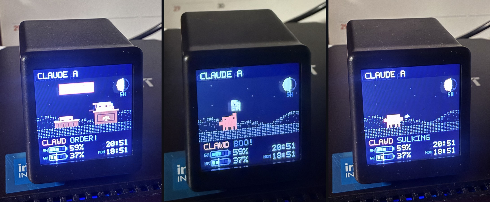

Your AI, alive on your desk.
Claude bows when it finishes. Swear at it and it sulks. Your usage limits stay in sight.
Pixel pets for Claude Code and Codex.
~$5 GeekMagic SmallTV. Stock firmware.
Free, open-source software.
It has moods.
Claude finishes: a bow. A rude prompt: a sulk. Make peace: a heart.


GIFs show the app's animations in an illustrated clock.
Some scenes are yours to discover. Explore the collection →
Different agents. Different little lives.
Claude Code
Bows when done, raises a hand when it needs you, and reacts to your session. Usage limits stay in view.
Reactions need the TokenTV plugin on macOS or Linux. Windows reactions aren't supported.Codex
A cloud bows when a turn ends. Its garden grows with token usage.
Completion needs a notify setting. Permission prompts and Claude's other reactions aren't supported for Codex.Screen animation demo; also includes Claude reactions.Make your clock react.
Use the Arcade clock face. Run TokenTV and your agent on the same computer.
-
Start the display
On the computer where your AI CLI is signed in:
npx token-tv startCopy the command, then paste it into your terminal.
-
Connect your agent
To get the reactions in the video, connect Claude Code or Codex.
-
See a first reaction
With the plugin connected on macOS or Linux, try
/tokentv petin Claude Code.With notify connected, finish a Codex turn to see its cloud bow.
One little clock.
One computer that stays on.
Your computer reads usage and sends pictures over Wi-Fi. The clock keeps its stock firmware.
Checked on SD_PRO and specific SmallTV Ultra units. Prices vary; similar-looking clocks may not work.
Check your clock before buying →